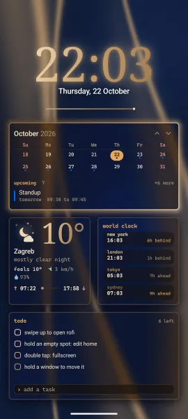
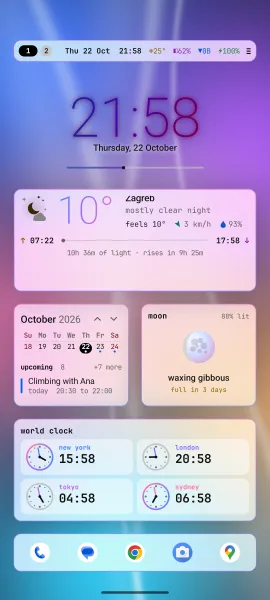
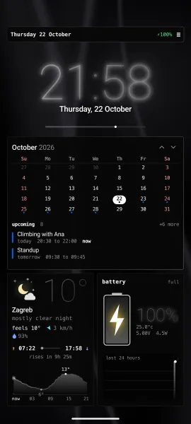
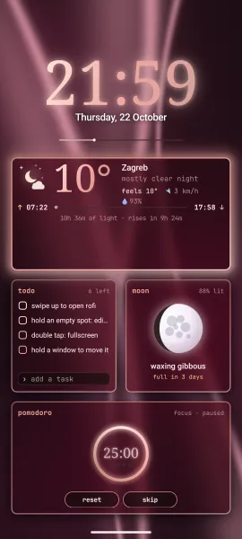
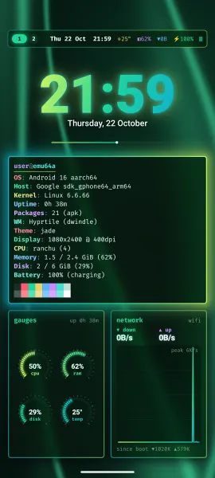
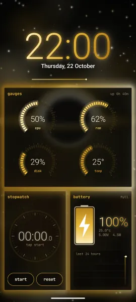
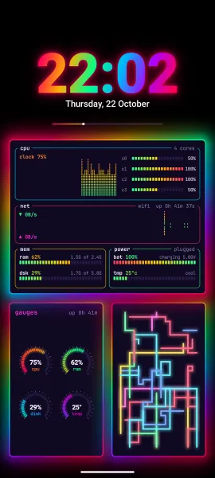
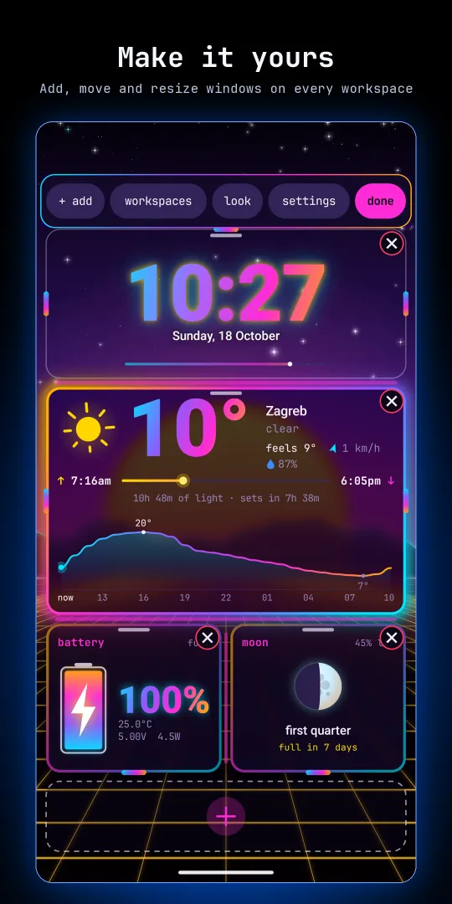

hyprtile
Your Android home screen as a tiling Linux desktop, inspired by Hyprland, Omarchy and kitty. Widgets become windows with gaps and glowing borders, under a waybar, with a terminal, a launcher and 34 themes from the ricing scene.
Whole looks in one tap, from calm camel and navy to liquid glass and a full rgb glow, each with its own painted wallpaper, and each look carries over to your lock screen.
This is the user guide, and the place to report bugs and ask for features. The app itself is on Google Play.

- 39presets, a whole look each
- 34themes, 15 more with pro
- 18moving wallpapers, plus 7 painted
- 29window kinds, 8 more with pro
- 5terminal fonts
- 0ads, accounts or analytics
Whole looks in one tap
One tap changes the whole look: wallpaper, colours, glass, borders, fonts and clock. Your windows stay, and your own look at the end brings yours back. The painted looks lead the list; a look built on a pro theme carries a pro tag.

camel and navythe out of the box look: navy silk, camel borders, a serif clock 
liquid glass · proclear white glass over a flowing colour field 
classy black · propure black, hairline white borders, a thin clock 
rose · prorose gold on pink silk, a light serif clock 
emerald · projade glass on green silk, lime to teal borders 
black and gold · progold borders round a black hole 
rgb glowa rainbow border on true black, every window lit
The list also has cream and forest, deep forest, latte paper, tokyo rain, vice city, neon hyper, nord lights, dracula, gruvbox retro and many more. Every preset · recipe: try a look and go back
New since 1.35
- Whole looks: camel and navy is the new default, with painted wallpapers for the new looks.
- Workspace names: give each workspace a name, shown on the bar and in menus.
- Lock gesture: double tap empty space to lock the phone, if you turn it on.
- Pull down: the full screen hyprtile panel, notifications, quick settings, search or any app you pick.
- Top bar items: put each item left, centre or right, in any order, like waybar, and pick the clock format.
- Stopwatch and countdown windows for everyone.
- Badges and buttons: notification badges on app icons, and buttons like mark as read and archive.
- Rotation: lock home in portrait or landscape, or let it follow the phone. The gesture bar sits on your look.
- Big numbers and icon size: a smaller temperature, clock and timers, and room for icon packs that draw small.
- Hyprtile pro: widgets, icon packs, 2fa codes, news, gps, sensors, friend and more, as one optional extra.
- A clean desktop: the CRT screen looks are removed, so Hyprtile stays a clean tiling desktop.
A tiling home screen
Widgets are windows in a dwindle layout, with gaps, rounded corners, rotating gradient borders, shadows and a frosted blur behind each one. Swipe between workspaces, each with its own windows and a name you give it.
A waybar, a terminal, a launcher
Workspace pills, clock, battery, network, cpu and memory up top. A kitty style terminal greets you with a fastfetch summary and runs a small shell. A rofi style launcher finds any app as you type.
Windows for everything
A big clock, weather with sunrise and sunset, a btop style monitor, notifications, a calendar, pinned apps, a cava visualizer and a music player styled after cliamp, with cliamp radio built in.
Rice it in a config file
hyprtile.conf, in Hyprland's syntax, reloads live as you save it: gaps, borders and gradient colours, rounding, blur and shadow, and the bezier curves that move windows and slide workspaces.
Inside the app
Edit mode, the picker, rofi and more, from a real phone. Scroll sideways for more.

edit mode: add, move and resize 
btop, cliamp, fetch and toggles 
calendar, todo, pomodoro and moon 
rofi: swipe up and type to find an app 
add a window: the picker 
more presets from the ricing scene
Hyprtile pro
Everything above is yours with the app. One optional purchase adds everything here and every add on that comes later. No subscription.
- Android widgets from your other apps as tiled windows, stacked if you like
- A news window for any RSS or Atom feed, riced like newsboat, that turns into a ticker tape when short
- A GPS window with your position and every satellite, and a sensors window with a level, a compass and live traces
- 15 more themes: pure black, pure white, C64, C128 and night red among them
- Icon packs from your installed icon pack apps
- 2fa codes, encrypted on this phone only: scan a QR code, bring codes over from Google Authenticator, keep a sealed backup
- A text and json editor, strong passwords never saved, a clipboard history sealed on this phone, and contacts in search
- Friend, fli the terminal pet, as a window
Settings, hyprtile pro. restore purchase brings pro back on a new phone. More in the guide.
Quick start
- Install Hyprtile from Google Play. It runs on Android 7 or newer.
- Open it. The welcome card shows the main gestures, then offers
take the tour,pick your look,set up your phoneandstart exploring. - Tap
set up your phonefor the setup guide: default home, lock screen, notification access and more. - Swipe sideways for workspaces, swipe up for rofi, double tap a window for full screen.
- Hold an empty spot for edit mode. Add windows, open workspaces, look and settings from the strip.
- Pick a preset under
look, and your desktop is riced.
Guide
Setup, gestures, workspaces, edit mode, windows, looks, hyprtile.conf, lock screen, pro, battery and accessibility.
Use cases
A focus phone, a music setup, a work dashboard, a night setup, your apps as icons, a full rice and more.
Cookbook
Short recipes: try a look, name a workspace, lock with a double tap, a pull down of your own, day and night, live weather and more.